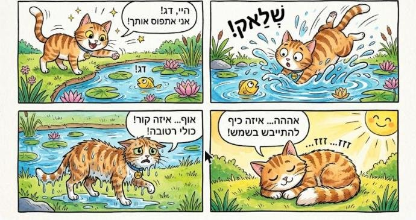
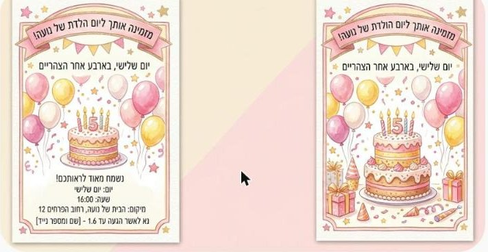
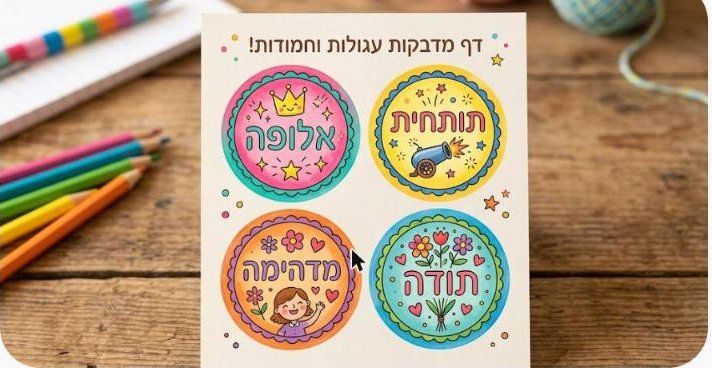

ספר מאויר, ותמונות בסגנונות
איך נכנסים לגמיני, ספר שלם מהוראה אחת עם Gems, ויצירת תמונות עם בחירת סגנון.
צופים בסרטון
בשביל Gemini צריך רק חשבון גוגל. אפשר להשתמש בחשבון של החוג.
מחפשים Gemini בגוגל
פותחים את הדפדפן ובחיפוש של גוגל כותבים Gemini. אפשר גם לכתוב בשורת הכתובת gemini.google.com.
לוחצים על Google Gemini
בתוצאה הראשונה לוחצים על Google Gemini.
בוחרים חשבון
אם גוגל שואלת באיזה חשבון להיכנס, לוחצים על החשבון של החוג. אם הוא לא ברשימה, לוחצים על Use another account ומוסיפים אותו.
כותבים סיסמה ולוחצים הבא
כותבים את הסיסמה של החשבון ולוחצים הבא. את הסיסמה אפשר למצוא באתר החוג, בהודעה על החשבונות המשותפים.
נכנסנו!
נפתח המסך הראשי של Gemini. למטה בצד יש עיגול עם האות של החשבון. עכשיו אפשר ליצור.
צופים בסרטון
ב-Gems יש עוזרים מוכנים. אחד מהם יוצר ספר מצויר שלם.
פותחים את ההגדרות
בפינה למטה לוחצים על גלגל ההגדרות.
בוחרים Gems
בתפריט שנפתח לוחצים על Gems.
בוחרים Storybook
ברשימת ה-Gems המוכנים בוחרים את Storybook. הוא יוצר ספר מצויר לילדים.
כותבים הוראה אחת
כותבים בעברית על מה הספר, לאיזה גיל, ובאיזה סגנון איורים. למשל ספר לילדים בני 8 על ילדה בשם מאיה שמגלה דלת קטנה בגינה. איורים בצבעי מים.
הספר מוכן
הספר מופיע בצד. אפשר לדפדף בין העמודים, ללחוץ האזנה כדי שיקריאו לנו אותו, להוריד ולשתף. (בצילום: דוגמה אחרת של גוגל.)
מדפדפים בספר
לוחצים על החץ ופותחים את הספר. בכל עמוד יש סיפור קצר ואיור. אפשר להמשיך לדפדף עד הסוף.
צופים בסרטון
אפשר לבחור סגנון מוכן במקום לכתוב אותו, ואפשר גם להשאיר את התיאור ריק.
לוחצים על +
בתיבה של Gemini לוחצים על +.
בוחרים יצירת תמונה
בתפריט בוחרים יצירת תמונה.
בוחרים סגנון
נפתחת גלריה של סגנונות. לוחצים על לשונית סגנון ובוחרים אחד, למשל סיכת אמייל.
כותבים מה לצייר, או משאירים ריק
הסגנון מופיע בתיבה. כותבים בעברית מה לצייר, למשל חתולה חמודה עם פפיון ורוד, ולוחצים לשלוח. אפשר גם לשלוח בלי לכתוב כלום.
התמונה מוכנה
אחרי כמה שניות מקבלים תמונה. אפשר לבקש שינוי, למשל אותו דבר בצבעי כחול.
בוחרים + ואז יצירת תמונה, מדביקים הוראה, ושולחים. אפשר לשנות את הפרטים לעצמכן.
קומיקס

ההוראה: קומיקס של ארבעה קטעים: חתולה ששמה לילי מנסה לתפוס דג בבריכה, נופלת למים, יוצאת רטובה, ובסוף מתייבשת בשמש. בועות דיבור קצרות בעברית. סגנון קריקטורה שמח וצבעוני
הזמנה ליום הולדת

ההוראה: הזמנה ליום הולדת בעברית. בראש ההזמנה כתוב בדיוק: "מזמינה אותך ליום ההולדת של נועה!". מתחת כתוב: "יום שלישי, בארבע אחר הצהריים". רקע של בלונים ועוגה, בצבעי ורוד וצהוב.
ידוען בסגנון פיקסאר (בניסיון הראשון Gemini סירבה. שינוי קטן בניסוח עזר)
ההוראה: דונלד טראמפ מחייך ומנופף, בסגנון דיסני פיקסאר
מדבקות עם כיתוב

ההוראה: דף עם ארבע מדבקות עגולות וחמודות, ועל כל אחת כיתוב קצר בעברית: "אלופה", "תותחית", "מדהימה", "תודה". צבעים עליזים.